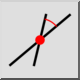

Σχετική γωνία
Γραμμή εργαλείων / Εικονίδιο:


Μενού: Σχεδίαση > Γραμμή > Σχετική γωνία
Συντόμευση: L, R
Εντολές: linerelativeangle | lr
Γραμμή εργαλείων / Εικονίδιο:


Δημιουργήστε γραμμές με σχετική γωνία προς υπάρχουσες οντότητες με αυτό το εργαλείο. Η υπάρχουσα οντότητα μπορεί να είναι γραμμή ή τόξο / κύκλος. Οι γραμμές με σχετική γωνία 0 μοιρών προς ένα τόξο είναι εφαπτομένες ή παράλληλες προς εφαπτομένες. Οι γραμμές με σχετική γωνία 90 μοιρών προς ένα τόξο ή γραμμή είναι ορθογώνιες γραμμές.